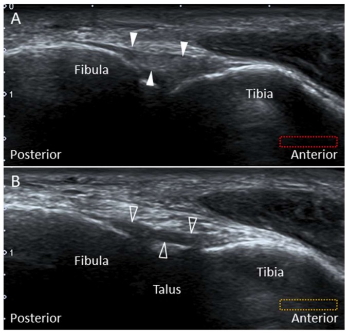

Respuesta clínica corta
¿Qué estructuras relevantes suelen faltar en el barrido básico de tobillo y pie?
Ligamentos sindesmóticos y accesorios, complejo de Lisfranc, retináculos, nervios pequeños y relaciones plantares profundas.
Dato clavePágina pilar · atlas anatómico avanzado
Un protocolo avanzado puede incluir sindesmosis, ligamento de Lisfranc, nervio de Baxter y estructuras plantares, pero reconocerlas no permite atribuirles automáticamente el origen del dolor.
Observado
Qué encontró y cómo interpretarlo
La cobertura anatómica es amplia y útil para una página pilar.
No hay estimaciones de fiabilidad ni de rendimiento clínico.
Atlas del artículo
Imágenes para entender el procedimiento
Estas figuras proceden del artículo original y se reproducen con licencia abierta verificada. Se muestran por su utilidad anatómica o técnica, no como prueba aislada de diagnóstico o eficacia.

El cambio distal del plano diferencia el ligamento tibiofibular anterior inferior del ligamento de Bassett, más profundo y próximo al talo.
Cómo leerlaLa visualización de estos ligamentos no establece por sí sola lesión, inestabilidad ni relación con síntomas.
Hung y colaboradores, Figura 4 del artículo original · Fuente · Licencia CC BY.
Procedimiento del artículo
Recorrido avanzado de tobillo y pie
El atlas organiza ventanas laterales, posteriores, mediales, dorsales y plantares y relaciona cada posición del transductor con una estructura poco visible en protocolos básicos.
- Transductor
- Lineal de alta frecuencia
- Método
- Ventanas regionales con referencias óseas
- Dinámica
- Movimiento y Doppler cuando aportan diferenciación
- 01
Sindesmosis y región lateral
Iniciar oblicuo sobre tibia y peroné distales y seguir ligamentos hacia lateral.
- Referencias
- AITFL, ligamento de Bassett, talo y peroné.
- Lectura
- La aparición parcial del talo ayuda a identificar el ligamento de Bassett.
- 02
Dorso y mediopié
Explorar articulaciones tarsometatarsianas y complejo de Lisfranc.
- Referencias
- Cuneiformes, metatarsianos y ligamento de Lisfranc.
- Lectura
- La anatomía profunda exige perpendicularidad y comparación.
- 03
Región medial y túneles
Seguir tendones flexores, paquete neurovascular y ramas nerviosas.
- Referencias
- Maléolo medial, sustentáculo, tibial posterior y nervios.
- Lectura
- Doppler diferencia vasos de nervios pequeños.
- 04
Planta y retropié
Recorrer fascia, músculos profundos y nervio de Baxter según síntomas.
- Referencias
- Calcáneo, fascia plantar, cuadrado plantar y abductor hallucis.
- Lectura
- Una asimetría o cambio de ecogenicidad no establece causalidad clínica.
Protocolo reconstruido de forma prudente desde el texto completo y las figuras del artículo; sirve para comprender la adquisición y no sustituye formación, supervisión ni un proceso diagnóstico completo.
Aplicabilidad
Qué significa clínicamente
Usar ventanas por regiones y enlazar fichas específicas.
Definir la pregunta clínica antes de ampliar el barrido.
Límite
Qué no permite afirmar
Revisión narrativa.
Sin muestra ni estándar de referencia.
La amplitud puede favorecer hallazgos incidentales.
Contexto
¿Se parece a tu paciente?
- Población estudiada
- Demostraciones anatómicas y ecográficas de estructuras poco incluidas en protocolos básicos; sin cohorte diagnóstica.
- Diseño
- Revisión anatómica y pictórica con protocolo regional
- Resultado evaluado
- Cobertura anatómica y claridad de ventanas avanzadas
Fuente primaria
Lee el estudio, no solo nuestro análisis
Hung CY, Chang KV, Mezian K, et al. Advanced Ankle and Foot Sonoanatomy: Imaging Beyond the Basics. Diagnostics. 2020;10(3):160. doi: 10.3390/diagnostics10030160
Responsabilidad editorial
Francisco José Extremera García
Fisioterapeuta colegiado ICPFA 4288 · Osteópata D.O.
Creador y responsable editorial de FisioLógico
- Última revisión
- Conflictos de interés
- Ninguno declarado.